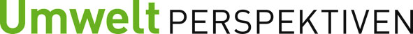
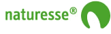
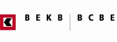

Gemeinsam arbeiten wir für eine Nachhaltige Entwicklung !
Unsere Partner in die Bildung
 [2] [2] |
 [3] [3] |
|
| Vereinigung für Umweltrecht | Association romande pour la protection des eaux et de l'air | Netzwerk für nachhaltiges Wirtschaften |
| Nachhaltige Entwicklung im Bauwesen und in der Unternehmensführung |
Unsere Medienpartner
|  [6] |
Unsere Sponsoren
|  [7] |  [8] | |
| Naturesse - das Geschirr der Natur | Die Bank mit Umweltleitbild | |
|
|
||